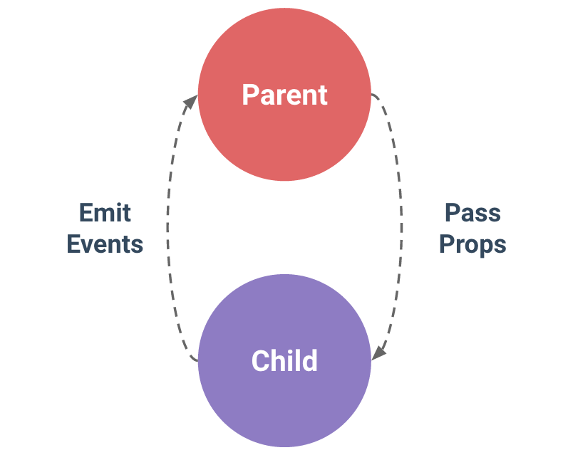

组件 (Component) 是 Vue.js 最强大的功能之一。组件可以扩展 HTML 元素，封装可重用的代码。在较高层面上，组件是自定义元素，Vue.js 的编译器为它添加特殊功能。在有些情况下，组件也可以表现为用 is 特性进行了扩展的原生 HTML 元素。
所有的 Vue 组件同时也都是 Vue 的实例，所以可接受相同的选项对象 (除了一些根级特有的选项) 并提供相同的生命周期钩子。
#全局注册
我们已经知道，可以通过以下方式创建一个 Vue 实例：
new Vue({要注册一个全局组件，可以使用 Vue.component(tagName, options)。例如：
Vue.component('my-component', {请注意，对于自定义标签的命名 Vue.js 不强制遵循 W3C 规则 (小写，并且包含一个短杠)，尽管这被认为是最佳实践
组件在注册之后，便可以作为自定义元素 《my-component》《/my-component》 在一个实例的模板中使用。注意确保在初始化根实例之前注册组件：
《div id="example"》渲染为：
《div id="example"》#局部注册
你不必把每个组件都注册到全局。你可以通过某个 Vue 实例/组件的实例选项 components 注册仅在其作用域中可用的组件
var Child = {这种封装也适用于其它可注册的 Vue 功能，比如指令。
当使用 DOM 作为模板时 (例如，使用 el 选项来把 Vue 实例挂载到一个已有内容的元素上)，你会受到 HTML 本身的一些限制，因为 Vue 只有在浏览器解析、规范化模板之后才能获取其内容。尤其要注意，像 ul、ol、table、select 这样的元素里允许包含的元素有限制，而另一些像 option 这样的元素只能出现在某些特定元素的内部。
《table》自定义组件 《my-row》 会被当作无效的内容，因此会导致错误的渲染结果。变通的方案是使用特殊的 [is] 特性：
《table》应当注意，如果使用来自以下来源之一的字符串模板，则没有这些限制：
因此尽可能使用字符串模板
构造 Vue 实例时传入的各种选项大多数都可以在组件里使用。只有一个例外：data 必须是函数。实际上，如果你这么做：
Vue.component('my-component', {那么 Vue 会停止运行，并在控制台发出警告，告诉你在组件实例中 data 必须是一个函数。但理解这种规则为何存在也是很有益处的，所以让我们先作个弊：
由于这三个组件实例共享了同一个 data 对象，因此递增一个 counter 会影响所有组件！这就错了。我们可以通过为每个组件返回全新的数据对象来修复这个问题：
组件设计初衷就是要配合使用的，最常见的就是形成父子组件的关系：组件 A 在它的模板中使用了组件 B。它们之间必然需要相互通信：父组件可能要给子组件下发数据，子组件则可能要将它内部发生的事情告知父组件。然而，通过一个良好定义的接口来尽可能将父子组件解耦也是很重要的。这保证了每个组件的代码可以在相对隔离的环境中书写和理解，从而提高了其可维护性和复用性
在 Vue 中，父子组件的关系可以总结为 prop 向下传递，事件向上传递 。父组件通过 prop 给子组件下发数据，子组件通过事件给父组件发送消息。看看它们是怎么工作的。

#使用Prop传递数据
组件实例的作用域是孤立的。这意味着不能 (也不应该) 在子组件的模板内直接引用父组件的数据。父组件的数据需要通过 prop 才能下发到子组件中。
子组件要显式地用 props 选项声明它预期的数据：
Vue.component('child', {然后我们可以这样向它传入一个普通字符串:
《child message="hello!"》《/child》结果是: hello!
HTML 特性是不区分大小写的。所以，当使用的不是字符串模板时，camelCase (驼峰式命名) 的 prop 需要转换为相对应的 kebab-case (短横线分隔式命名)：
Vue.component('child', {
-- 在 HTML 中使用 kebab-case --
《child my-message="hello!"》《/child》
如果你使用字符串模板,则没有这些限制
#动态Prop
与绑定到任何普通的 HTML 特性相类似，我们可以用 v-bind 来动态地将 prop 绑定到父组件的数据。每当父组件的数据变化时，该变化也会传导给子组件：
《div》